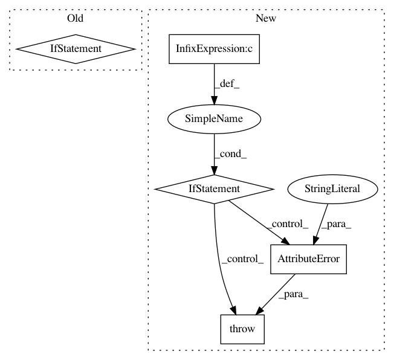

997720644500d3cc822c210b92d72c82b442d183,src/sagemaker/sklearn/model.py,SKLearnModel,__init__,#SKLearnModel#Any#Any#Any#Any#Any#Any#Any#Any#,60
Before Change
model_data, image, role, entry_point, predictor_cls=predictor_cls, **kwargs
)
if py_version == "py2":
logger.warning(
python_deprecation_warning(self.__framework_name__, defaults.LATEST_PY2_VERSION)
)
self.py_version = py_version
self.framework_version = framework_version
self.model_server_workers = model_server_workers
After Change
:class:`~sagemaker.model.Model`.
validate_version_or_image_args(framework_version, py_version, image)
if py_version and py_version != "py3":
raise AttributeError(
"Scikit-learn image only supports Python 3. Please use "py3" for py_version."
)
self.framework_version = framework_version
self.py_version = py_version
super(SKLearnModel, self).__init__(
In pattern: SUPERPATTERN
Frequency: 3
Non-data size: 5
Instances
Project Name: aws/sagemaker-python-sdk
Commit Name: 997720644500d3cc822c210b92d72c82b442d183
Time: 2020-06-11
Author: 65414824+metrizable@users.noreply.github.com
File Name: src/sagemaker/sklearn/model.py
Class Name: SKLearnModel
Method Name: __init__
Project Name: aws/sagemaker-python-sdk
Commit Name: 997720644500d3cc822c210b92d72c82b442d183
Time: 2020-06-11
Author: 65414824+metrizable@users.noreply.github.com
File Name: src/sagemaker/sklearn/estimator.py
Class Name: SKLearn
Method Name: __init__
Project Name: Featuretools/featuretools
Commit Name: 88429bfe56ad2103df596ae2c2c982eafdad32a3
Time: 2020-05-20
Author: 4307001+thehomebrewnerd@users.noreply.github.com
File Name: featuretools/computational_backends/calculate_feature_matrix.py
Class Name:
Method Name: calculate_feature_matrix